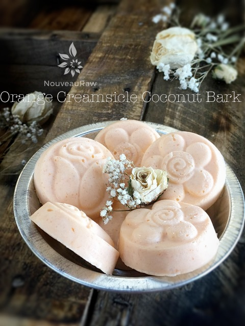

Orange Creamsicle Coconut Bark
Orange Creamsicle Coconut Bark

~ raw, vegan, gluten-free, nut-free ~
Creamsicles! Oh, those were the days. School was out for the summer and that meant it was time to visit great-grandma! I could hardly wait to get there… as I bounced along in the Greyhound bus, visions danced in my head; mud pies! bike riding! swimming!
My girlfriend Bonita!! Worms and freckles! Summer rains! After the storms would pass through, there were rivers of water racing down the gutters in the streets. This meant Amie Sue had to get to work!
Off came the shoes, long gone were the socks, and with a running leap, I would race across the green grass and jump into the raging road rivers. There I stood braving the ankle-deep water. haha I would run up and down the streets, shuffling my feet causing the water to spray all over. Seeing a car coming from a distance, I would pause, anxiously awaiting for it to pass by and spray me with rainwater that had collected in the pot-holes.
I stood up straight, shoulders back, my face lifted toward the warm sun, I was in position! Wooosh! Score! One drenched Amie Sue who was rejoicing as water dripped down her face. Then my attention would return to the water flowing in the street and would continue my mission, for this was serious playtime.
I bet you are wondering just what the heck all of that has to do with creamsicles, aren’t you? OK, so maybe I got a bit sidetracked as I was visiting memory lane but to end the story, my day would finish back at grandmas. Soaking wet, muddy, hair matted to my face and a smile spread from ear to ear… great-grandma would come outside and greet me with a homemade creamsicle on a stick. After my special treat, it was time for a hose-down before I could come into the house to take a bath. Aaah, those were the days.
I hope you enjoy the simplicity of this recipe. Please comment below and have a blessed day, amie sue
Nutritional value per treat (1 Tbsp)
Calories – 117 / Fat – 14 g / Carbs 0.4 g / Protein 0.1 g
Ingredients:
Yields 8 (1 Tbsp bark chips)
- 1/2 cup raw cold-pressed coconut oil or raw coconut butter, softened
- 1 tsp orange extract
- 1 tsp vanilla extract
- 1/4 – 1/2 tsp liquid stevia
- Opt: 2 drops natural food coloring; orange
Preparation:
- Soften the coconut oil by placing the coconut container in a bowl filled with hot water.
- Do not completely melt it, just warm it to a softened stage.
- The reason for keeping the coconut oil at a soft stage rather than melted is when the oil is pure liquid all of the added ingredients sink to the bottom of your mold. With the coconut oil at a soft, thick stage everything will remain suspended in the oil.
- Add the extract, stevia, and coloring. Using a spatula, mix everything together until well combined.
- Start with a small amount of stevia first and work up to your tastes.
- I used 3 tsp of carrot juice to get my pale orange coloring
- Pour the mixture into the mold and gently tap it to even out the batter.
- Freeze for at least 10 minutes. Once frozen, pop them out and store them in an air-tight, freezer-proof container.
- Note: these will melt at room temp so it is best to pull one out and eat right away.
© AmieSue.com